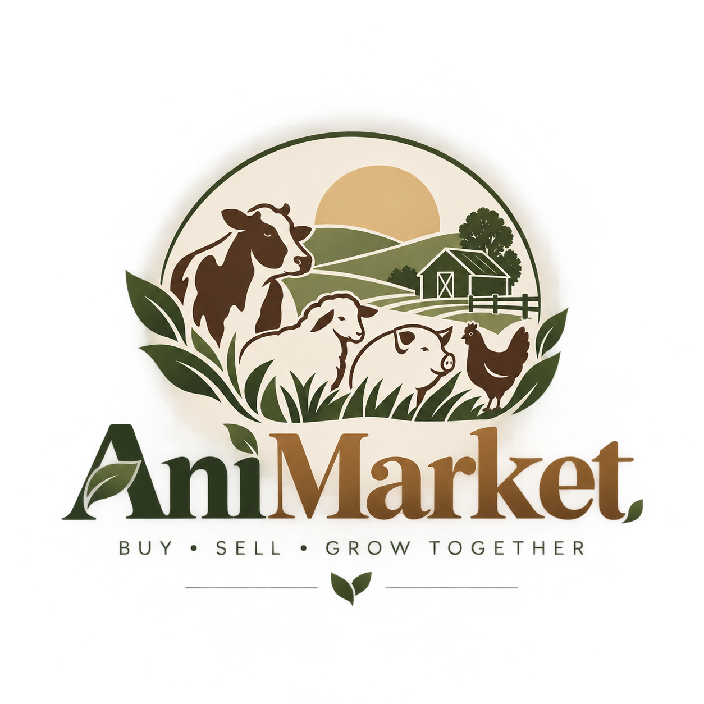
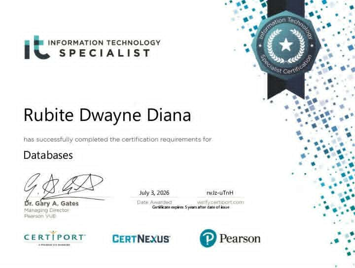

Connected experiences
Responsive frontends, application logic, and mobile interfaces that work together.
Hi, I’m Dwayne D. Rubite. I turn complex ideas into intuitive web and mobile experiences, with a strong foundation in databases and a careful eye for quality.
I believe useful software starts with understanding people, then getting the details right.
I’m a Full-Stack Developer and a Bachelor of Science in Computer Science student, majoring in Cybersecurity at the University of Mindanao, Tagum College. My experience spans responsive interfaces, mobile applications, and the databases that connect them.
Through AniMarket, a livestock marketplace mobile application, I bring structure to practical problems and connect people through useful technology. I work across development, testing, and collaboration to create solutions that are functional, clear, and dependable.
Responsive frontends, application logic, and mobile interfaces that work together.
Database design, table structures, and data integrity for real application workflows.
Functional testing, documented test cases, defect tracking, and verified fixes.
A mobile marketplace that reflects my approach to applications, data, and the people who use them.

PROJECT BRAND IDENTITYA livestock marketplace that brings listings, real-time conversations, and buyer–seller connections into one mobile app.
1 featured project · Project contributions are drawn from my CV. AniMarket branding is my supplied project logo.
A practical toolkit across programming, interfaces, data, and collaborative development.
Logic, application behavior, and structured data.
Responsive interfaces and mobile experiences.
Design, administration, and data integrity.
Version control, prototyping, and system planning.
18 tools across 4 areas of expertise

VIEW THE CERTIFICATECertified in database concepts, design, and management.
The certificate states a validity of 5 years from its issue date.
Open full-size certificateA foundation in computer science, a focus on cybersecurity, and hands-on experience turning ideas into working applications.
My full story, in a CVUniversity of Mindanao, Tagum College
CURRENT STUDIESMobile application developer of AniMarket, a livestock marketplace built with Dart, Flutter, and Firebase. Developed listings, user profiles, real-time communication, and Firebase integration.
See project contributions ↗Laureta National High School
My project experience brings development, structured data, and software quality together.
Build responsive web interfaces and mobile application features, from product listings to user profiles and transaction displays.
Design database tables and manage centralized data to support reliable inventory, sales, and application workflows.
Validate functionality, document test cases, identify defects, and verify fixes throughout the development lifecycle.
I work across web systems, mobile applications, and databases. My featured project is AniMarket, a Flutter-based livestock marketplace with Firebase integration.
I developed the AniMarket mobile application, including livestock listings, messaging and calling, user profiles, and Firebase integration.
Live demos and public repository links are not included in this portfolio yet. You can read my contributions in the project details or contact me to discuss the work.
My education and database certification are summarized here, with the certificate available to view at full size. Download my CV for my complete background and project contributions.
Send me an email, call the number below, or use the contact form to prepare an email draft. Let me know about your project, role, or collaboration idea.
Have a project in mind, a development opportunity, or an idea worth exploring? I’d love to hear about it.